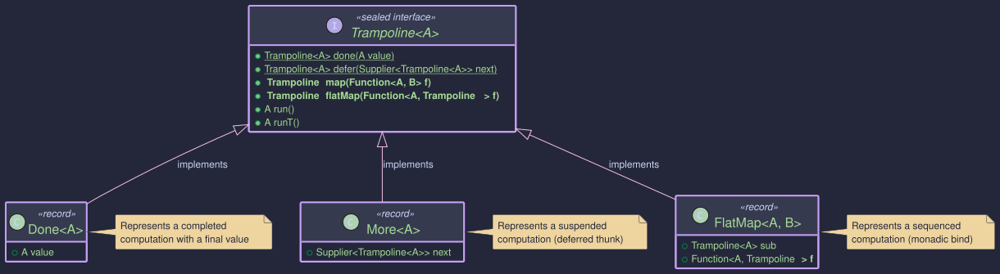
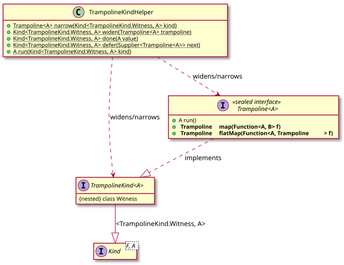
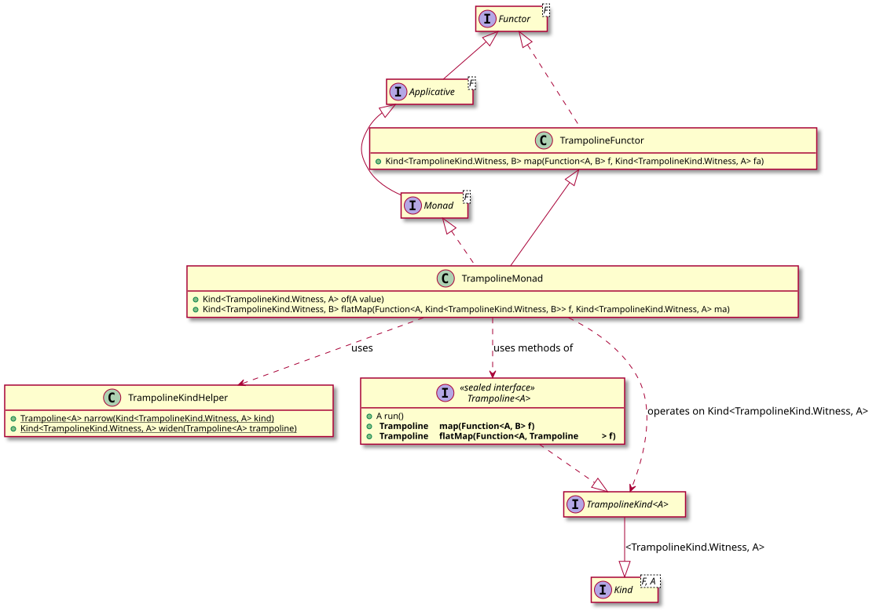

The Trampoline Monad:
Stack-Safe Recursion in Java
- Why the JVM will betray your recursive code at the worst possible moment
- How to mechanically convert any recursive function to a stack-safe one in three steps
- Implementing mutually recursive functions without stack overflow
- Using
Trampoline.doneandTrampoline.deferto build trampolined computations - Composing results with
mapandflatMap - When Trampoline is the right tool and when it is not
Blow Up Your Stack in 3 Seconds
Here is an innocent function. Five lines, no tricks:
static long sum(long n) {
if (n <= 0) return 0;
return n + sum(n - 1);
}
Call sum(10) and you get 55. Call sum(1_000) and you get 500500. Call sum(50_000) and you get this:
Exception in thread "main" java.lang.StackOverflowError
at Example.sum(Example.java:3)
at Example.sum(Example.java:3)
at Example.sum(Example.java:3)
... (thousands more identical frames)
Every recursive call pushes a frame onto the JVM call stack. The stack has a fixed size (typically a few hundred KB to 1 MB). Once you exceed roughly 5,000-10,000 frames, the JVM kills your program. Unlike a heap OutOfMemoryError, you cannot catch and recover from this gracefully. Your computation is simply gone.
Languages like Haskell and Scala can optimize tail calls so the stack never grows. Java cannot. If your algorithm is recursive and your data is large, you have a problem.
The Trampoline<A> type solves it.
The Fix: Trampoline
The name comes from the execution model. Instead of diving deeper and deeper into the stack, each recursive step "bounces" back to a flat loop that decides what to do next:
Normal Recursion Trampolining
sum(5) loop:
sum(4) +--> sum(5) returns Defer
sum(3) | |
sum(2) | v
sum(1) +--> sum(4) returns Defer
sum(0) | |
return 0 | v
return 1 +--> sum(3) returns Defer
return 3 | |
return 6 | v
return 10 +--> ...
return 15 +--> sum(0) returns Done(0)
Stack depth: O(n) Stack depth: O(1)
Blows up at ~5,000 Handles 1,000,000+
The trick: instead of making the recursive call, you describe it as a data structure (Defer). A simple while loop in the run() method processes one step at a time, never growing the stack beyond a single frame.
Any recursive function can be mechanically converted to a trampolined one. The transformation is always the same:
Step 1: Change the return type T --> Trampoline<T>
Step 2: Wrap base cases return value --> Trampoline.done(value)
Step 3: Wrap recursive calls f(x) --> Trampoline.defer(() -> f(x))
That is it. No restructuring, no cleverness. Follow these three steps and your function becomes stack-safe. Call .run() on the result to execute it.
Core Components
The Trampoline Structure

The HKT Bridge for Trampoline

Typeclasses for Trampoline

| Component | Role |
|---|---|
Trampoline<A> | Sealed interface with three variants: Done<A> (final value), More<A> (suspended thunk), FlatMap<A,B> (monadic bind) |
Trampoline.done(value) | Create a completed computation holding a final value |
Trampoline.defer(supplier) | Suspend a computation for later evaluation -- the key to stack safety |
trampoline.run() | Execute the trampoline iteratively and return the final result |
trampoline.map(f) | Transform the eventual result without executing yet |
trampoline.flatMap(f) | Sequence two trampolined computations, maintaining stack safety |
TrampolineKind<A> | HKT marker (Kind<TrampolineKind.Witness, A>) so Trampoline works with generic typeclasses |
TrampolineKindHelper | Provides widen, narrow, done, defer, and run for the HKT bridge |
TrampolineMonad | Monad<TrampolineKind.Witness> instance -- gives you of, map, and flatMap through the typeclass |
TrampolineUtils | Stack-safe applicative operations: traverseListStackSafe, map2StackSafe, sequenceStackSafe |
Before -- naive recursion that blows the stack:
static BigInteger factorialNaive(BigInteger n) {
if (n.compareTo(BigInteger.ZERO) <= 0) return BigInteger.ONE;
return n.multiply(factorialNaive(n.subtract(BigInteger.ONE)));
}
// factorialNaive(BigInteger.valueOf(10000)) --> StackOverflowError
After -- apply the 3-step recipe:
import org.higherkindedj.hkt.trampoline.Trampoline;
import java.math.BigInteger;
// Step 1: return type is now Trampoline<BigInteger>
static Trampoline<BigInteger> factorial(BigInteger n, BigInteger acc) {
if (n.compareTo(BigInteger.ZERO) <= 0) {
return Trampoline.done(acc); // Step 2: wrap base case
}
return Trampoline.defer(() -> // Step 3: wrap recursive call
factorial(n.subtract(BigInteger.ONE), n.multiply(acc))
);
}
// Execute it -- handles 100,000+ iterations without breaking a sweat
BigInteger result = factorial(BigInteger.valueOf(100_000), BigInteger.ONE).run();
System.out.println("Result has " + result.toString().length() + " digits");
Since Trampoline is a monad, you can use map and flatMap to compose results:
// Transform the result after computation
Trampoline<String> described = factorial(BigInteger.valueOf(10_000), BigInteger.ONE)
.map(r -> "10000! has " + r.toString().length() + " digits");
System.out.println(described.run());
// Sequence two trampolined computations
Trampoline<BigInteger> combined = factorial(BigInteger.valueOf(5), BigInteger.ONE)
.flatMap(a -> factorial(BigInteger.valueOf(6), BigInteger.ONE)
.map(b -> a.add(b)));
System.out.println("5! + 6! = " + combined.run()); // 840
Mutual recursion is where Trampoline really shines. Two functions calling each other cannot be unrolled into a simple loop, yet they blow the stack just as fast:
Before:
static boolean isEvenNaive(int n) {
if (n == 0) return true;
return isOddNaive(n - 1);
}
static boolean isOddNaive(int n) {
if (n == 0) return false;
return isEvenNaive(n - 1);
}
// isEvenNaive(100_000) --> StackOverflowError
After:
import org.higherkindedj.hkt.trampoline.Trampoline;
static Trampoline<Boolean> isEven(int n) {
if (n == 0) return Trampoline.done(true);
return Trampoline.defer(() -> isOdd(n - 1));
}
static Trampoline<Boolean> isOdd(int n) {
if (n == 0) return Trampoline.done(false);
return Trampoline.defer(() -> isEven(n - 1));
}
// 1,000,000 bounces, constant stack space
System.out.println(isEven(1_000_000).run()); // true
System.out.println(isOdd(999_999).run()); // true
Each call to isEven defers to isOdd and vice versa. The run() loop handles the ping-pong without ever growing the stack.
When traversing large collections with custom applicatives, standard recursive traverse can overflow. TrampolineUtils provides drop-in stack-safe replacements:
import org.higherkindedj.hkt.Kind;
import org.higherkindedj.hkt.trampoline.TrampolineUtils;
import org.higherkindedj.hkt.id.*;
import java.util.List;
import java.util.stream.Collectors;
import java.util.stream.IntStream;
List<Integer> largeList = IntStream.range(0, 100_000)
.boxed()
.collect(Collectors.toList());
Kind<IdKind.Witness, List<String>> result =
TrampolineUtils.traverseListStackSafe(
largeList,
i -> Id.of("item-" + i),
IdMonad.instance()
);
List<String> items = IdKindHelper.ID.narrow(result).value();
System.out.println("Traversed " + items.size() + " elements safely");
Key utilities: traverseListStackSafe, map2StackSafe, sequenceStackSafe. Use these when your collection might exceed 10,000 elements.
When to Use Trampoline
| Scenario | Recommendation |
|---|---|
| Deep single recursion (>5,000 frames) | Use Trampoline -- this is exactly what it is for |
| Mutual recursion at any depth | Use Trampoline -- you cannot convert mutual recursion to a simple loop |
| Traversing large collections with custom applicatives | Use TrampolineUtils |
| Recursive tree walking (JSON, XML, file systems) | Use Trampoline -- tree depth is unpredictable in production |
| Shallow recursion (<1,000 frames) | Skip it -- the overhead is not justified |
| Performance-critical tight loops | Skip it -- a hand-written while loop will always be faster |
| Simple iteration that is already a loop | Skip it -- do not add complexity where none is needed |
- The JVM has no tail-call optimization. Trampoline gives you the equivalent by converting recursion into heap-allocated data structures processed by a flat loop.
- Stack space is O(1). Heap space is O(n) -- you trade stack frames for small objects on the heap.
- The 3-step recipe (change return type, wrap base case, wrap recursive call) is mechanical and works on any recursive function.
- Call
.run()to execute. Until then, nothing happens -- evaluation is lazy. - For real-world use cases, think: recursive descent parsers, tree traversals, graph algorithms, deeply nested data structures.
The Higher-Kinded-J trampoline implementation was directly influenced by Scott Logic's blog post Recursion, Thunks and Trampolines with Java and Scala. That article traces a progression from problem to solution that closely mirrors what you have just read:
-
The JVM problem -- every method call pushes a stack frame. The default stack is ~1 MB, so deep recursion hits
StackOverflowErrorwell before the heap is anywhere close to full. Even tail-recursive code overflows because the standard JVM does not implement tail-call optimisation (unlike the Scala compiler, which can rewrite@tailrecfunctions into iterative bytecode). -
Thunks -- a thunk is simply a wrapped computation you can execute later (
Supplier<T>in Java). The key insight is that instead of making a recursive call, you return a thunk that describes the call. This converts stack growth into heap allocation. -
The trampoline pattern -- a sealed interface with two states:
Done(result)for a completed value andMore(thunk)for a suspended step. Arun()loop unwrapsMorethunks iteratively in a single stack frame until it reachesDone:
// From the blog post — the core idea Higher-Kinded-J builds on
public sealed interface Trampoline<T> permits Done, More {
static <T> T run(Supplier<Trampoline<T>> initialThunk) {
Trampoline<T> current = initialThunk.get();
while (true) {
switch (current) {
case Done<T> d -> { return d.result(); }
case More<T> m -> { current = m.nextStep().get(); }
}
}
}
}
Higher-Kinded-J extends this foundation in several ways: adding FlatMap<A,B> as a third variant for monadic sequencing, integrating with the HKT simulation so Trampoline participates in generic typeclass code, and providing TrampolineUtils for stack-safe applicative traversal of large collections. The Free monad's foldMap also uses Trampoline internally for stack-safe interpretation -- a direct payoff of having a first-class trampoline abstraction in the library.
Trampoline has dedicated JMH benchmarks measuring stack-safe recursion overhead and scaling behaviour. Key expectations:
- Deep recursion (10,000+) completes without
StackOverflowError— stack-safe trampolining is working - Performance scaling is linear with depth — no exponential blowup or quadratic complexity
factorialTrampolinevsfactorialNaiveshow similar performance at depth 100 — trampoline overhead is minimal for moderate depths- Non-linear scaling is a warning sign suggesting memory leak or quadratic complexity
./gradlew :hkj-benchmarks:jmh --includes=".*TrampolineBenchmark.*"
See Benchmarks & Performance for full details and how to interpret results.